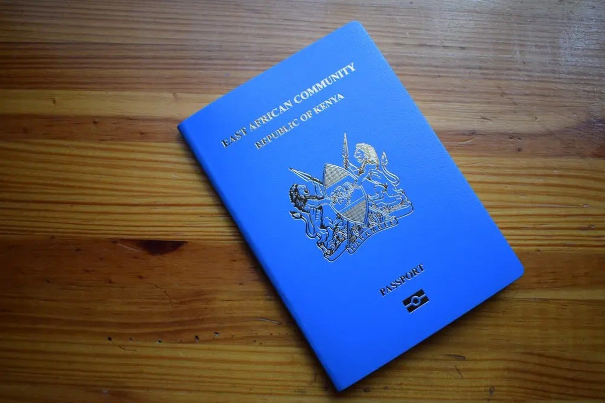

Photograph: Onyango George / EA Hospitality Pulse
Kenya just won Africa's visa argument. Its own arrivals data says the border was never the barrier.
Kenya climbed from 46th to third on the Africa Visa Openness Index in a single year, the steepest reversal the index has recorded. Nearly a million Africans came anyway during the year it sat near the bottom and charged them $32.50 at the gate. What open borders actually deliver is visible in Rwanda's books, and it is not a lodge rate.
At the Pearl of Africa Tourism Expo in Kampala in late May, Kenya came to sell a number. The target was 300,000 Ugandan visitors in 2026, up 27 per cent on the 234,556 who crossed in 2025, and the pitch was built on access. Felix Mwangangi, Kenya Airways' country manager for Uganda, told the hall that "daily flights from Entebbe to Nairobi with onward connections to Mombasa are strengthening access to Kenya's coastal destinations." Frank Gisha, chief executive of the East Africa Tourism Platform, put a figure on the momentum: a 30 per cent increase in cross-border tourism since the pandemic period, driven by demand for weddings, MICE events and beach holidays.
Nine months earlier, the same proposition would have been harder to make. Kenya spent 2024 near the bottom of the continent's own scorecard on human movement, and the reversal since has been the sharpest the measure has ever recorded.
The Africa Visa Openness Index, published jointly by the African Development Bank and the African Union Commission, placed Kenya third of 54 countries in its 2025 edition, with a score of 0.962, its highest ever. A year earlier Kenya ranked 46th with a score of 0.113, having fallen 17 places. Only Rwanda and The Gambia now sit above it, sharing first place with perfect scores of 1.000 for offering visa-free entry to every African national. For a country that had become the index's cautionary tale, third place is a genuine policy win, and the industry has treated it as one.
The fall was self-inflicted and instructive. Kenya announced a visa-free Africa and then implemented it as an electronic travel authorisation, live from 1 January 2024, priced at $32.50 and requiring application at least three days before travel plus proof of a hotel reservation. Travellers from countries that had enjoyed reciprocal visa-free arrangements with Nairobi suddenly needed an online permit. Margaret Monyani, senior migration researcher at the Institute for Security Studies in Pretoria, wrote in March 2025 that the system "became a bureaucratic obstacle, complicating travel for many," and that "ETA policies often acted as digital barriers to entry despite being framed as progressive." Kenya waived the requirement for most African nationals during 2025, keeping it only for Libya and Somalia on stated security grounds, and scrapped the fee and the entry forms with it. East African Community citizens retain six months; other Africans get two.
So the border is open, the scorecard says so, and the question nobody at the Kampala expo asked out loud is what it is worth.
Kenya's own statistics agency has already run the experiment. The Tourism Research Institute's performance report for 2024, the year the ETA was live and the year Kenya sat 46th, records 975,883 arrivals from African countries. That is 40.8 per cent of the 2,394,376 international arrivals Kenya logged, and it was an increase of 17.9 per cent on 2023. Uganda sent 225,559, Tanzania 203,290, Somalia 81,555, Rwanda 65,866 and Burundi 51,865. Nearly a million Africans travelled to Kenya in the worst year for Kenyan visa openness in the index's history, while being charged $32.50 and asked to file three days in advance. Whatever was constraining that flow, it was not the gate.
There is a second number in the same report that operators should hold next to it. Kenya's total bed-night occupancy in 2024 came to 9,992,721, up 16 per cent, of which 4,818,755 were international and 5,173,966 domestic. Set nearly 2.4 million international arrivals against 4.8 million international bed-nights and the average international visitor is accounted for by roughly two nights of recorded accommodation. The caveat matters: the bed-night series counts classified establishments, so a guest staying with family or in an unclassified room never appears in it, which is precisely why the gap is informative. The visitors the open border delivers in greatest volume are the ones least likely to show up as a sold night at all. An arrival is a border statistic. A bed-night is a revenue line, and the distance between the two is not something a waived permit closes.
That matters because of what replaces it as an explanation, and the cleanest available evidence sits across the border in Kigali. Rwanda has held a perfect openness score for years. If visa liberalisation were a demand lever, Rwanda is where the lever would have been pulled hardest and longest, and its 2025 receipts are now public. The Rwanda Development Board reported $685 million, roughly one trillion Rwandan francs, from 1.49 million visitors, up from 1.36 million in 2024. Itzhak Fisher, chairman of the RDB board, framed it as confirmation of "Rwanda's position as a leading destination for high value tourism and international events."
Read the composition rather than the headline and a different lesson appears. Gorilla tourism accounted for $248 million of that total, a permit-priced product sold overwhelmingly to long-haul visitors. Visiting friends and relatives accounted for $180 million, the second largest line. Business travel brought $112 million, MICE $94.7 million and education-related travel $64 million. Inflows were led by East African Community markets and the Democratic Republic of Congo. A decade of perfect openness has produced, on Rwanda's own accounting, a very large regional VFR and business book sitting alongside a small, dollar-denominated wildlife product that openness had nothing to do with.
Kenya's purpose-of-visit split in 2024 points the same way. Holiday and leisure accounted for 44.2 per cent of arrivals, business and conference 26.9 per cent, and visiting friends and relatives 22.0 per cent. The African 40.8 per cent is not distributed evenly across those buckets. The traveller who comes from Kampala or Dar es Salaam, now at zero border cost, is disproportionately the one attending a wedding, a conference, a trade fair or a funeral, staying with family or in a mid-market town hotel, paying in shillings, and buying no park permit at all.
That is a real market. It is simply not the market most of the sector's capacity and pricing was built for. Doris Makena, group sales and marketing manager at Jacaranda Hotels Kenya, reported a 17 per cent increase in business engagements off the back of the Kampala expo, which is exactly the kind of return the regional segment produces: volume, repeat, short lead time, thin margin. Margaret Masha, who handles sales and marketing for Bamburi Beach, Southern Palms and Royal Zanzibar, works the same channel on the coast. Neither is selling a twelve-night itinerary at a long-haul rate, and the arithmetic of a two-night regional booking is not the arithmetic of the brochure.
The sharper risk is that the league table is read as a trend when it is an exception. The 2025 index average for the continent came in at 0.448, lower than each of the previous three years and barely above the 2021 reading. Visa-free travel scenarios did reach an all-time high of 814, or 28.2 per cent of the 2,895 possible country pairs. But scenarios requiring a visa before departure jumped to 1,463, or 51.1 per cent, up from 47.1 per cent in 2024, and visa-on-arrival fell to its lowest level on record at 20.4 per cent. Twenty countries changed policy in 2025; eleven improved and nine went backwards. The index itself calls the shift from visa-on-arrival to pre-travel authorisation "a step backwards on Africa's visa openness," and notes that the expansion of e-visas to 31 countries has prioritised security screening over facilitation.
Among the five countries that introduced new visa requirements for previously visa-free citizens in 2025 was Uganda, the single largest African source market Kenya was courting in Kampala. Kenya has opened unilaterally into a continent that is, in aggregate, tightening pre-clearance. Joy Kategekwa, who directs the regional integration coordination office at the African Development Bank, argues the case in the report's foreword that "a visa-free Africa is good economic policy." She is almost certainly right about the direction. An operator budgeting for 2027 still has to price the continent as it is, which is a patchwork in which a guest's ability to reach Nairobi depends on the passport in the drawer and on whether their own government went the other way last year.
What remains binding, once the gate is free, is the seat. Speaking at the Aviation Africa summit in Nairobi in September, Moses Mwangi, managing director of 748 Air Services, put it plainly: "Africa cannot have a truly integrated economy if it remains difficult or expensive to fly from one African city to another." Prime Cabinet Secretary Musalia Mudavadi used the same platform to note how many African travellers still route through non-African hubs, and restated Kenya's commitment to the Single African Air Transport Market. A waived $32.50 does not move a fare, and the Entebbe to Nairobi to Mombasa chain Mwangangi was selling in Kampala is a connection, with a connection's price and a connection's failure modes.
For operators the practical reading is narrow and worth saying plainly. Kenya's climb to third place is a real improvement in a real friction, and it should be welcomed, but it is not a demand forecast and it does not justify rebuilding a 2027 mix around it. The regional arrival it unlocks was largely already arriving. The segment it genuinely helps is short-stay, shilling-priced, event-led and family-led, which rewards a two-night package, a flexible cancellation window, a conference rate card and a mobile payment rail, not an extra long-haul rate tier. The yield question to put to a revenue manager this quarter is not how many more Ugandans arrived but what each one contributed per night, and whether the answer justifies the inventory held back for them in July.
There is also a defensive reading. The two-month ceiling on non-EAC African visitors, against six months for East African Community citizens, quietly sorts the regional market into two products: a short trip and a stay. The longer permission is the one that supports a repeat business guest, a contractor, a student's family or the slow-season resident rate that carries a city hotel through a thin April, and it is available only inside the bloc. An operator in Nairobi or Kigali selling to Lagos or Accra is selling into the shorter window, and should price and package for it rather than assume the openness score has made the two cases the same. Openness is measured at the gate. The commercial difference shows up in how long someone is allowed to stay once through it.
Rwanda's ledger is the honest preview. Ten years at the top of the openness table bought it a $180 million VFR book and a $112 million business book. Those are good businesses. They are not the business the brochure is selling, and the gap between the two is where the next three years of East African hospitality planning will either be won or quietly lost.
📣 Telegram 💬 WhatsApp 💼 LinkedIn 📚 All guides